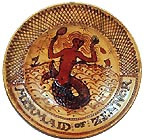

The use of toxic ceramic materials
in the potters studio, such as lithium carbonate, barium carbonate
and lead frits is still widespread. The toxicity of lead can be
hard to detect, except in cases of acute lead poisoning. Lead
is an accumulative poison and will collect in the body over a
period of years, even decades, before noticeable symptoms occur
or a toxic level is reached.
In ancient Rome and in Britain until the 19th C, lead pipes
were used for household water, leading to a slow poisoning of
the population. Lead was an ingredient in ointments and was used
in rouges and skin creams at the court of Versailles. It was used
in ancient pottery as far back as Egypt of 4,000 - 3,000 BC, but
the earliest documented lead glaze was found near Seleucia, of
ancient Mesopotamia, where the earliest Maiolica
techniques also originated. The recipe included
Glass 60
Lead 10
Copper 15
Salpetre 0.5
Lime 0.5
Lead
is still used in glazes today, but we have become much more aware
of its dangers, not only in glazes,
but also the environment in general, and the use of lead in petrol
in particular. The use of lead in glazes, particularly low-fired
glazes such as raku, can be a hazard not only for the potter,
but also the consumer or buyer of such wares. The use of raw lead
in the form of lead oxide, red lead, white lead (lead carbonate),
galena (lead sulphide) and lead monosilicate is particularly dangerous,
as these types of lead can find their way into the body and be
dissolved by stomach acids and then be deposited in various internal
organs where they accumulate.
Fired glazes can leach lead if the glaze has not been fired
high enough (at least cone 03) to bind the lead with other glaze
components, forming lead bisilicate. Any acidic foods or liquids
subsequently used with such glazes, e.g. fruit juices, will dissolve
unbound lead particles from the glaze surface. In extreme cases
this could create a lethal dosis of lead.
One solution to this problem is not to use lead, even fritted,
in tableware at all, a practice which I generally recommend. Fritted
lead does supposedly render leaching negligible, but leachability
can increase through the combination with other incompatible glaze
ingredients, particularly oxides and carbonates, especially cobalt
and copper. In any case, leaded frits are usually used as a temperature
lowering flux and can often be substituted with other non-leaded
frits.
In those cases where leaded frits seem necessary, it is recommended
to fire to at least cone 03, to ensure sufficient reaction of lead
and glaze ingredients. They should be fired only in oxidation, as
reduction discourages the binding of lead to silica, alumina and
other ingredients. In some countries, it may be mandatory to have
tableware glazed with leaded frits to be tested in a professional
laboratory!
Inorganic Lead Toxicology
More Articles